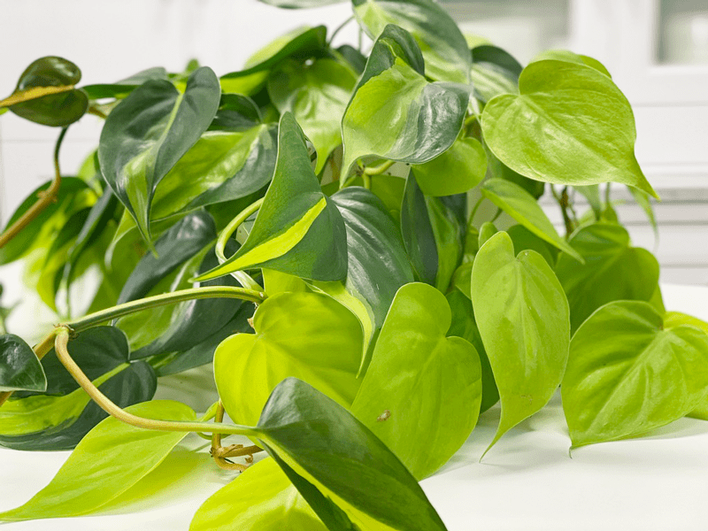
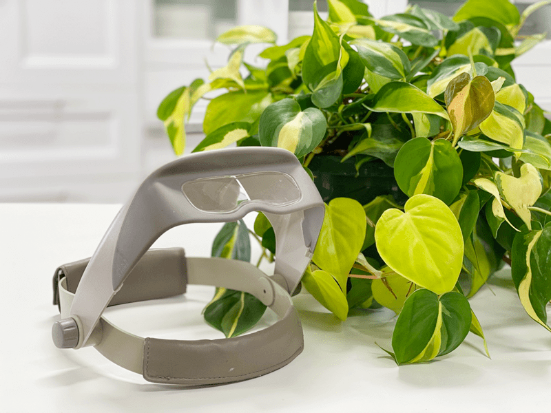
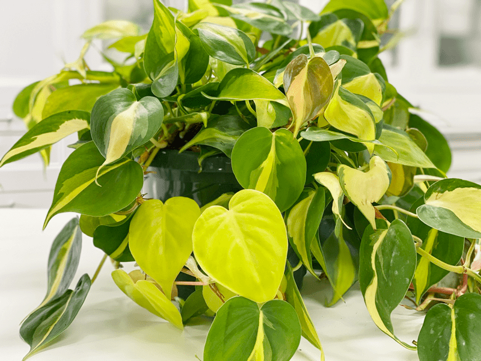

Philodendron Brasil Plant | Care Difficulty – Easy
The vining Philodendron Brasil is an unquestionably easy-care indoor plant because unlike me, they actually thrive on being ignored for short periods. They can live in a wide range of lighting and are not super thirsty. Have I hooked you yet? These houseplants can be trained to grow up a trellis or a pole, or can be displayed as a hanging plant.

One of the gorgeous trademarks of this plant is the variation of the leaves. It is usual for the Philodendron Brasil to have a combination of variegated leaves and solid-colored ones. The solid leaves are often dark green, but I have some that are a bright yellow/green color. The variegated leaves are dark green with a central band of chartreuse.
If you are looking for ways to sneak nature into your home, plants are probably the most important and beneficial. There are many reasons to include a healthy dose of plant life in any or every room of your home. Beyond their aesthetic value, having plants in your home reduces toxins in the air and improves air quality. These benefits range from lowering blood pressure to energizing the mind and even encouraging deeper and more healthful sleep. If you are looking to add a plant to your home, start with the Philodendron Brasil!
To be frank, it took me months to find a healthy one in the local stores. Whenever I would come across one, it would be sparse, and the leaves would be covered in dirt and white stuff. It was odd, because this always seemed like a common theme. Needless to say, I was quite discouraged. But through perseverance, I was able to find one here and there, rounding out my plant collection.
Water Requirements
Never, ever let your Philodendron Brasil completely dry out. If you keep doing this repeatedly, your lower leaves will yellow and turn brown, and the plant will get leggy. I like to take all my plants to the kitchen sink and thoroughly soak the soil, allowing all the water to drain out. Make sure you water around the entire pot and not just in one area. Water more often in the growing season, and reduce the frequency during the winter months.
Light Requirements
Philodendrons prefer medium to bright indirect sunlight but can live in lower light conditions. However, their leaves will be smaller, and the vines will become leggy if the light is not bright enough. It is best to keep it out of the direct sun, which will burn foliage. In many cases, the variegated version of a plant needs more light than the non-variegated version of the same plant.
Optimum Temperature
Most household temperature ranges are adequate for these indoor plants. Letting them remain in temperatures under 55℉ will stunt their growth. Avoid cold drafts and heat vents.
Fertilizer – Plant Food
Use a diluted solution of a complete liquid fertilizer every 2-4 weeks throughout the growing season. Do not fertilize during the winter, since most plants go dormant in the colder months. Sometimes your indoor plants will grow all year long. If this is the case, fertilize them with a 1/4 strength diluted liquid fertilizer, or top dress the soil with worm castings or rich compost. If you overfeed your plants, they will let you know. Here are a few things to watch for:
-
Yellowing or browning leaves.
-
The top surface of the soil may be white or crusty.
-
The leaves of the plant will start dropping off.
-
The roots can begin to rot.
If you overfeed a plant, you can remove it from its current soil and repot it in fresh soil. This technique is undoubtedly the best way to get rid of the excess nutrients. Alternatively, you can flush the soil, which involves drenching the soil with water and letting it drain out. Repeat this several times to help the soil get rid of excess fertilizer.

Additional Care
-
Remove any dead, discolored, damaged, or diseased leaves and stems as they occur with clean, sharp scissors. Snip stems just above a leaf node; new growth will emerge from this cut.
-
Clean the leaves often enough to keep dust off. You can wipe the plant down regularly with a solution of rubbing alcohol to deter insects from the plant. Always spot check a few leaves before doing this treatment on the whole plant. It needs to diluted so it doesn’t burn the leaves. Learn more (
here).
-
About every six months, I like to give the plant some preventative treatments against the wildlife of plants (AKA bugs). I spray them down with a rubbing alcohol solution, then wipe it off of each leaf with a clean cloth. After that, I spray it down with a
neem oil solution. I will share all of this in another detailed post.
Plant Characteristics to Watch For
Diagnosing what is going wrong with your plant is going to take a little detective work, but even more patience! First of all, don’t panic and don’t throw a plant out prematurely. Take a few deep breaths and work down the list of possible issues. Below, I am going to share some typical symptoms that can arise. When I start to spot troubling signs on a plant, I take the plant into a room with good lighting, pull out my magnifiers, and begin by thoroughly inspecting the plant.
Some leaves are part orange/red and green.
- Actually, this is normal! Nothing is wrong. New growth starts off this way. As the leaves mature, they will turn dark green and lime.
Variegation on the leaves is fading.
-
Leaves are mostly green with streaks/splashes of golden yellow. The leaves will lose their variegation when they don’t get enough light. If your plant is unfurling new leaves that are solid green, don’t worry. That’s normal–they’ll become variegated as they age.
-
Solution: Move the plant to a place where it will be exposed to bright, indirect sunlight. Give it time to recover.
The vines are leggy, with small leaves.
The base of the plant is looking sparse.
-
If you allow the vines to grow long and never prune, the top of the plant, in the pot, can become sparse.
-
Solution: If the base of the plant is looking sparse, it is time to trim the vines. Doing this will cause the plant base to become lusher. Cutting right after a leaf node (the place where the leaf is attached to the stem) will encourage the stem to branch out, giving you a fuller plant.
The leaves are soft and wilting.
-
Wilting is caused by dry soil.
-
Solution: Although the plant will quickly bounce back after a good drink, make sure to water it regularly. Frequent droughts can put the plant under a lot of stress.
Yellow and Mushy Stems
-
If the stems are yellow and mushy, it’s a symptom of root rot. Depending on the severity, your plant may be too far gone.
-
Solution: Remove the plant from the pot and check the roots. You can trim the dark, mushy roots with scissors. If any of the stems are still green and healthy, propagate stem cuttings for new plants and discard the dying plant and soggy soil.
Brown Leaves
-
If the leaves are turning brown, it can be a sign of underwatering.
-
Solution: Take the plant to the kitchen sink and drench it with water. It is best to use plant containers with drainage holes in the base. I like to give it a good dose of water, let it soak in, add more water, let it soak in… repeat until the water runs out of the base.
Fungus gnats
-
Fungus gnats are harmless, except if you want to keep your sanity. They love to hang out in front of your face, testing your will and composure. They love wet, peaty potting mixes. You’ll find these tiny black fly-like insects crawling on the soil.
-
Solution: Check in on your watering habits. Keeping the soil too wet makes for a breeding ground for these gnats. There are several different treatments to help keep the population under control. Click (
here) to learn more.
My plant is bushier on one side.
-
If your plant is bushier on one side, rotate the plant periodically to ensure even growth on all sides and dust the leaves often so the plant can photosynthesize efficiently. When dusting the leaves, also take the opportunity to inspect the undersides, and keep an eye out for pests.
Common Bugs to Watch For
If you want to have healthy houseplants, you MUST inspect them regularly. Every time I water a plant, I give it a quick look-over. Bugs/insects feeding on your plants reduces the plant sap and redirects nutrients from leaves. Some chew on the leaves, leaving holes in the leaves. Also watch for wilting or yellowing, distorted, or speckled leaves. They can quickly get out of hand and spread to your other plants.
IF you see ONE bug, trust me, there are more. So, take action right away. Some are brave enough to show their “faces” by hanging out on stems in plain sight. Others tend to hide out in the darnedest of places, like the crotch of a plant or in a leaf that has yet to unfurl.
- Mealybugs look like small balls of cotton. They can travel, slooooooowly, but they have a strong will and determination! Though they are slow-moving, if any plant is touching another, there is a chance the mealybug will hitch a ride on a new leaf and spread. They breed like rabbits of the insect world. Females can deposit around 600 eggs in loose cottony masses, often on the underside of leaves or along stems.
- Scales are dark-colored bumps that are primarily immobile insects that stick themselves to stems and leaves. They are rather inconspicuous and don’t look like a typical insect. They can range in color but are most often brownish in appearance. They’re called “scales” primarily due to their scale-like appearance on a plant, due to waxy or armored coverings. They are often seen in clumps along a stem, sucking away at the plant’s juices with their spiky mouthpart.
- Aphids are more commonly seen if you place your plants outdoors. Aphids are indeed bugs. They are tiny insects that, along with black, also come in shades of yellow, green, brown, and pink. They are often found on the undersides of leaves.
- Spider mites are more common on houseplants. They are not insects–they are related to spiders. These appear to be tiny black or red moving dots. Spider mites are nearly invisible to the naked eye. You often need a magnifying lens to spot them, or you may just notice a reddish film across the bottom of the leaves, some webbing, or even some leaf damage, which usually results in reddish-brown spots on the leaf.

Toxicity
All parts of this plant are toxic to humans as well as to dogs and cats. They contain insoluble calcium oxalates, which are poisonous if ingested. The symptoms of poisoning from ingesting a philodendron may be a burning sensation on the tongue or lips and throat. Often, the later stages of philodendron ingestion include vomiting and diarrhea. Keep the plant high up and out of reach from any vulnerable members of your family–this includes pets.
© AmieSue.com